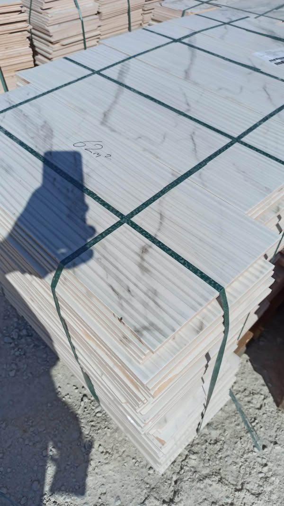

Her ölçüde seramik çeşitleri vardır. Mermer görünümlü, ahşap desenli, geometrik ve modern tasarımlar arasından ürünleri showroomumuzda inceleyin; güncel ölçü ve stok bilgisi için bize ulaşın.
Açık ve koyu tonlarda, farklı mermer desenleriyle hazırlanan seramik seçenekleri.

Doğal ahşap görünümünü seramiğin farklı renk ve yüzey seçenekleriyle buluşturan koleksiyon.

Geometrik, taş görünümlü ve dekoratif desenlerle farklı mekânlara uyum sağlayan seçenekler.

Düz, desenli ve farklı doku seçenekleriyle duvar ve zemin uygulamalarına yönelik koleksiyonlar.

Banyo duvarları ve farklı iç mekânlar için çeşitli renk, desen ve ölçülerde seramikler.

Paketli seramik stoklarımızdan bir görünüm. Ürün ölçüsü ve güncel stok bilgisi için bizi arayın.
Kaliteli seramikleri en uygun fiyatlarla buluşturmak için farklı marka, desen ve ölçü seçeneklerini bir araya getiriyoruz. İhtiyacınıza ve bütçenize uygun ürünü bulmanıza showroom ekibimizle yardımcı oluyoruz.
Birinci kalite, seri sonu ve outlet seçenekleriyle farklı bütçelere uygun seramik alternatifleri sunuyoruz.
Farklı ebatlardaki seramik çeşitlerimizle küçük alanlardan geniş projelere kadar aradığınız ölçüyü bulmanıza yardımcı oluyoruz.
Mermer, ahşap ve taş görünümlerinden sade ve modern yüzeylere uzanan koleksiyonumuzu yakından inceleyin.
Kullanım alanınızı ve projenizi dinleyerek ürün, ölçü ve miktar seçiminizde ekibimizden destek alın.
Seramik karo; kil ve diğer inorganik hammaddelerin şekillendirilip yüksek sıcaklıkta pişirilmesiyle üretilen, duvar ve zemin kaplamalarında kullanılan bir yapı malzemesidir. Üretim yöntemi, gövde bileşimi, pişirme koşulları ve sır uygulaması karonun görünüşünü ve teknik performansını etkiler. Sırlı yüzeyler renk ve desen çeşitliliği sunarken sırsız ürünlerde yüzey karakteri gövdenin kendi dokusuyla oluşur.
Seramik karolar farklı renk, desen, biçim, ölçü ve yüzey bitişlerinde üretilebilir. Gövdenin yoğunluğu ve su emme oranı ürün türüne göre değişir; porselen karolar daha düşük su emme oranlarıyla bilinen seramik karo grubundadır. Bu nedenle “seramik” tek tip özellikte bir ürün değildir: aşınma, leke, kimyasal madde, neme ve kaymaya karşı performans ürünün teknik sınıfına ve yüzeyine bağlıdır.
Duvar, zemin, mutfak, banyo ve diğer iç ya da dış mekânlarda kullanılacak karonun seçimi, ürünün üretici tarafından belirtilen kullanım alanına göre yapılmalıdır. Karo yüzeyi suyu itebilse de karo gövdesi su emebilir; seramik kaplama tek başına su yalıtımı yerine geçmez. Islak hacimlerde uygun yalıtım sistemi, yapıştırıcı, derz malzemesi ve kayma performansı birlikte değerlendirilmelidir. Temizlikte ürünün bakım talimatlarına uymak, yüzey görünümünün korunmasına yardımcı olur.
Ölçü ve stok seçenekleri ürüne göre değişebilir. Her ölçüde seramik çeşitleri vardır; size uygun ölçüyü ve güncel stok bilgisini öğrenmek için bizimle iletişime geçin.